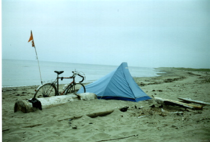

Previous
Day
Previous
Day Next Day
Next Day
I got up on the beach.

Didn't have that much breakfast, because I didn't have any fresh water. So I packed
up and headed into town and had a cheeseburger. After talking to a bunch
of guys for a while, I left for Moncton.
I rode slowly but steadily. The first part was rather beautiful. Then I got onto Hwy 11. Pretty small for a main highway. Then got off onto Hwy 134. Nice and quiet.
Rode right into Moncton. Asked a policeman where I should stay. He suggested camping in a city park!
So I went to the Tidal Bore Look-out and watched the tide come in (perfect timing). Munched on some food and then set up my tent.
Previous
Day
Next Day
 Dave's Page
Dave's Page
 Home
Home